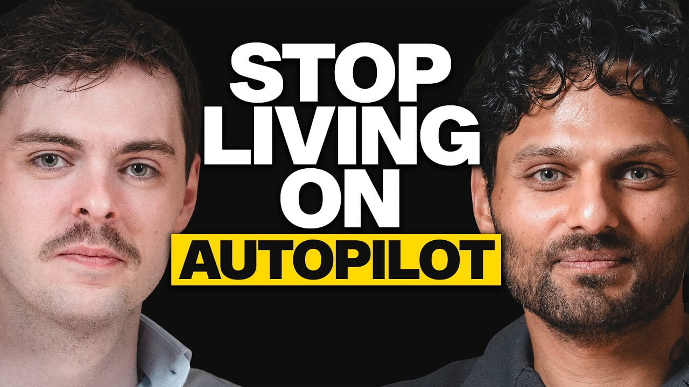

Alex O'Connor: Why You Feel Stuck in Life (#1 Question to Ask Yourself NOW)

Summary
The following discussion will focus on Alex O’Connor’s philosophical insights into aspects of consciousness, science, and human knowledge limitations. The key claim is that although science is very successful in explaining natural events using laws and formulas, science fails to explain the reasons behind the existence of those laws and the entire universe. O’Connor gives examples like Newton’s explanation of gravity to demonstrate the difference between describing the mechanism of action and finding the reason for it.
Another important topic is the hard problem of consciousness, which deals with the question of how subjective experience emerges from brain mechanisms. According to O’Connor, materialists are wrong in assuming that all processes in the brain are responsible for creating consciousness, and current scientific theories do not offer enough explanations about subjective experience or qualia. There are other philosophical approaches to consciousness, such as idealism and Advaita Vedanta.
In addition, the discussion looks into the results of studies on the field of neuroscience, like those done on “split brain,” which challenge the notions of self as a singular entity and bring up issues about free will. Overall, O’Connor promotes intellectual humility because many crucial questions regarding our very existence are still left unanswered.
Speaker /(Guest): Alex O’Connor
Interviewer / Host: Jay Shetty
Concept of the Interview: Feeling stuck in life, self-awareness, purpose, and psychological
growth
Personal Opinion
I consider myself a follower of Alex O’Connor’s content, especially where he talks about religion, philosophy, and introspection. From this interview, some key takeaways emerged for me, which relate to personal direction and introspection. First, from this interview, it dawned on me how easily one falls into repetitive patterns without really thinking about what one is doing or where one wants to go in life. For instance, I tend to be involved in day-to-day actions without really stepping back and analyzing what I am doing and where I stand at the moment or where I want to end up.
Reflection
It made me realize the necessity of reflection for personal development in my life. Until this interview, I used to not make a critical review of my life course because I was mostly preoccupied with my activities. But Alex O'Connor made me consider the questions of whether my actions match my future plans or intentions. I realized that feeling "stuck" in my life is caused by a lack of reflection rather than any objective situation in the world. It means that, as a person, I should think about what I really want in order to move further.
Date I Watched the Interview
July 15, 2026
New Vocabulary
- Introspection: the examination or observation of one's own mental and emotional processes.
- Stagnation: a lack of progress or development.
- Intentionality: the directedness of consciousness toward objects or states of affairs.
- Existential awareness:Conscious reflection on one’s purpose, meaning, and place in life.